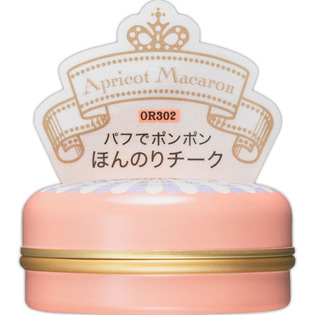

返回列表
产品名称：マジョリカ マジョルカ パフ・デ・チーク アプリコットマカロン

資生堂 マジョリカ マジョルカ パフ・デ・チーク アプリコットマカロン ＯＲ３０２
メーカー 資生堂
JANコード 4901872519729
商品の特徴
パフでポンポン ほんのりチーク
成分・分量
-
用法及び用量
＜使用方法＞
●パフに適量をとり、にっこりと笑ったときのほおの高いところを中心にパフでポンポンとぼかします。